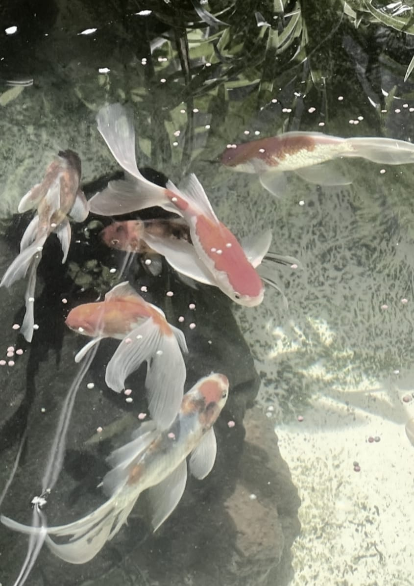
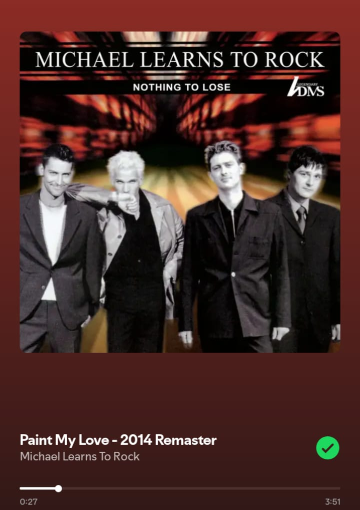
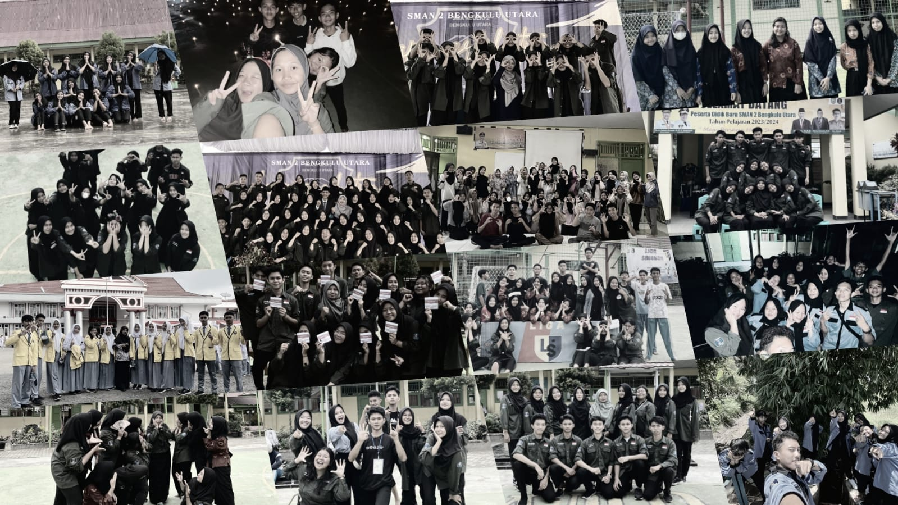
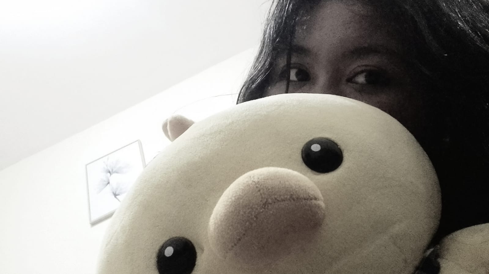
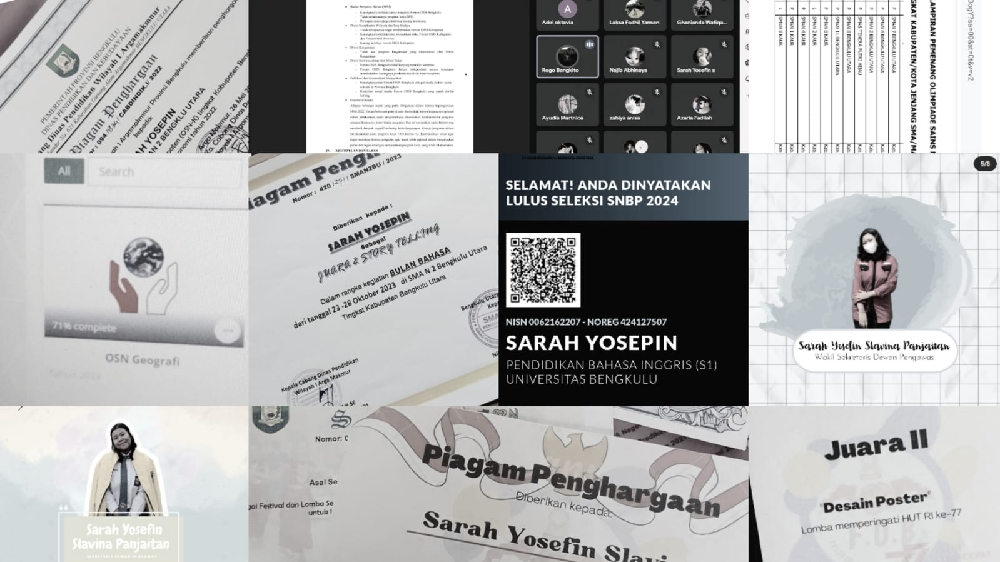

My Portfolio


ofc koiiii are my favorite because they're so cutee

>this is one of my favorite songs from many MLTR songs

here are some photos of my organizational activities during high school, yes I had the position of general secretary for 2 periods

This is Didi, I've loved stuffed ducks since I was a kid
